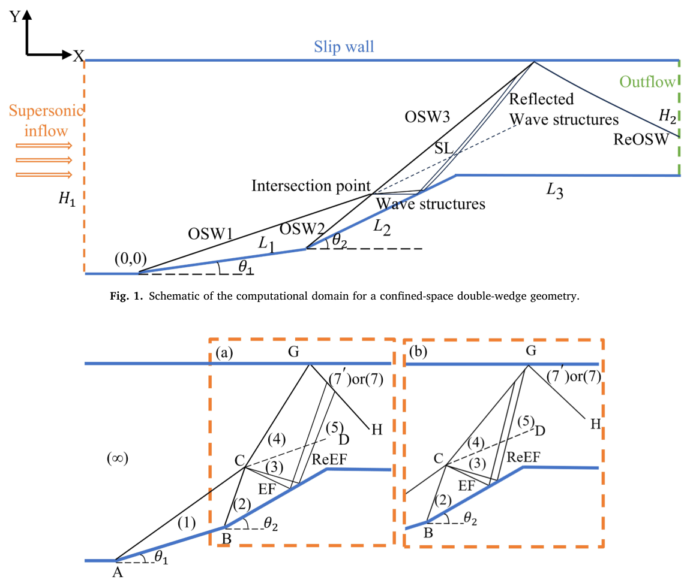
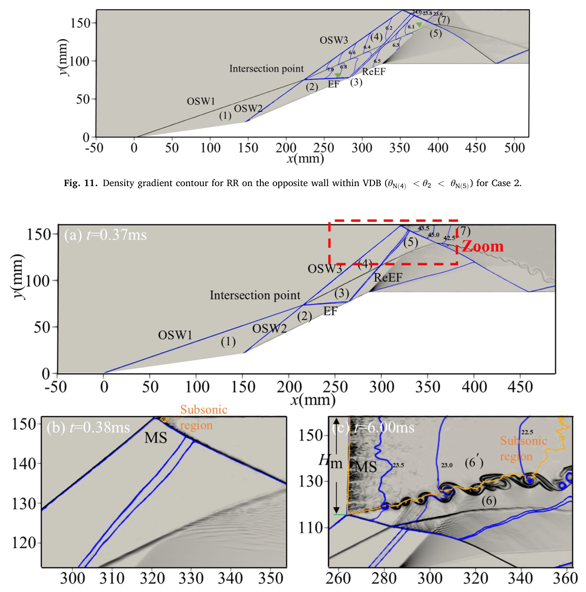
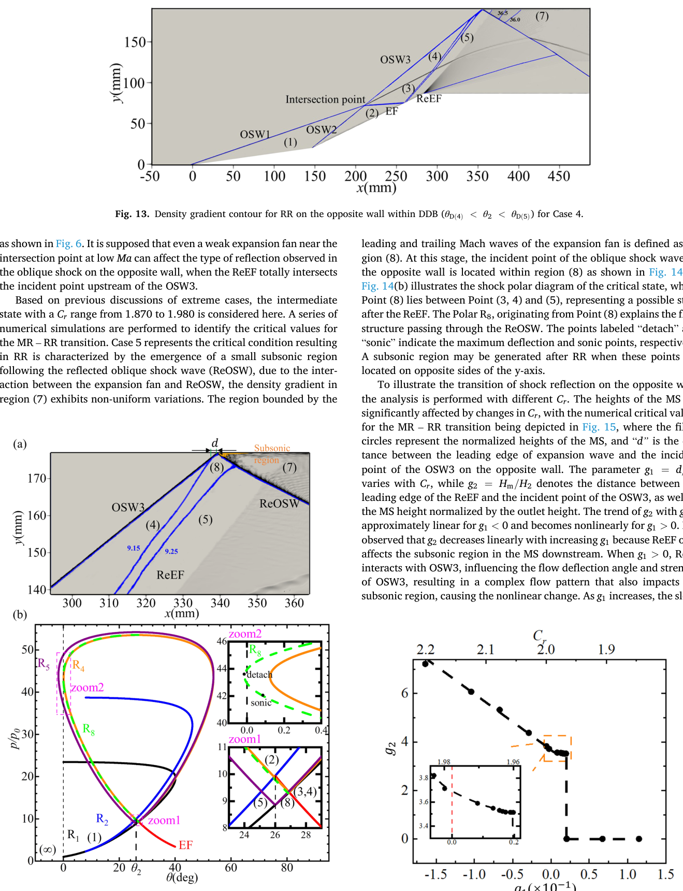
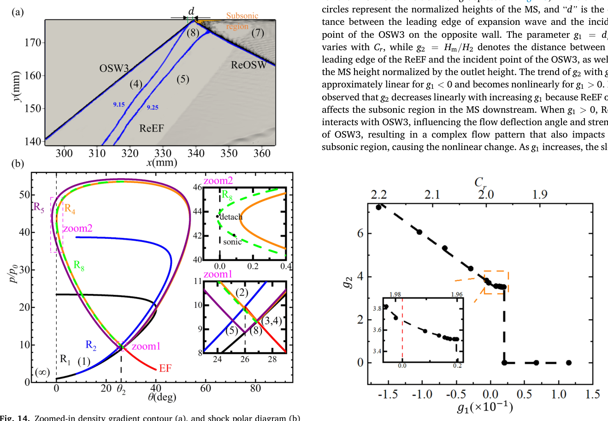

01中文摘要
针对受限空间双楔中激波/激波干扰交点附近波系对入射激波反射类型的影响，采用激波极线分析揭示Type VI与Type I干扰附近波系导致的临界条件偏移；以双楔收缩比Cr控制入射激波与膨胀波的相对位置，数值分析流场与激波反射结构的演化。结果：脱体条件以上，Type VI膨胀波对斜激波反射类型影响有限，但在脱体条件位移带内影响显著；膨胀波完全覆盖时，可确定对壁规则反射—马赫反射转捩的临界Cr，并观察到规则反射后的亚声速区；马赫杆高度随Cr呈线性或非线性增长，取决于膨胀扇位置；Type I交点附近激波对另一侧壁面反射类型影响较弱。
原始摘要（英文/原文）
To understand the reflection type of incident shock wave under the influence of the wave structures near the intersection point of shock/shock interaction in confined-space double-wedge. Shock polar analysis is conducted to reveal the displacement of critical conditions due to the interaction of wave structures near the intersection point of Type VI and I. The evolution of the flow field and shock reflection is comprehensively analyzed for various relative positions of the incident shock wave and expansion waves, which controlled by contraction ratio (Cr) of the double-wedge. Computational results show that expansion wave of Type VI has limited impact on the reflection type of oblique shock wave above detachment condition. However, its influence on the shock reflection configuration becomes appreciable within the displacement band of the detachment condition. When the expansion waves cover the incident shock wave, The critical Cr for the RR-MR transition on the opposite wall is determined when expansion waves fully cover the incident shock, and a subsonic region following RR is observed. Additional insight into the trend of Mach stem height along increasing Cr shows linear or nonlinear mode, which is dominated by the related position of expansion fans. It is also shown that the shock wave near the intersection point of Type I contributes subtle effect on the reflection type at the opposite wall.
02阅读说明
类型：理论（激波极曲线分析）+ 无粘数值模拟的机理性研究。材料：16页全文、图注清单与表1均完整；正文式(1)–(3)已对照PDF第2、5页原页核对，式(1)中p/p0为跨斜激波压比（p0为波前压力），无缺失指数。图表可读性：图注完整，正文对图12–图17的定量描述较全；表1与附录表A1–A3文本层列对齐较差，个别区域压力比仅按正文引用。信息完整度较高；提取口径为“理论判据—数值验证—参数趋势”，所有页码为原文印刷页码。 文章类型：期刊
03一句话核心与三句话摘要
受限空间双楔中，交点膨胀扇使脱体条件位移，收缩比控制对壁反射由MR转为RR，临界Crc≈1.959。
- 开放空间双楔的SSI波系已有大量研究，但受限空间双楔（更接近二维进气道）中交点附近膨胀扇/激波对斜激波反射型的影响尚未被完全认识。 AI概括
- 作者用激波极曲线分析建立RR–MR判据，并以blastFOAM求解二维无粘Euler方程，对Ma=4.5与2.0、θ1=8°、θ2=12.9°–28°的7个工况做验证，发现ReEF完全交于入射点下游时对壁为MR、交于上游时为RR，临界Crc=1.959。 AI概括
- Type VI交点膨胀扇仅在脱体条件位移带（DDB）内明显改变反射型，Type I交点激波引起的偏转角仅约10^-2 deg、工程意义有限；作者并提出反射型迟滞有待变马赫数模拟进一步研究。 AI概括
04核心内容清单
| 要点 | 类型 | 重要性 | 原文依据 | 属性 |
|---|---|---|---|---|
| 建立受限空间双楔的激波极曲线判据，给出下游状态(4)的θN(4)、θD(4)与上游状态(5)的θN(5)、θD(5)。 | 理论判据 | A | 第3页 §3.2.1，图3 | 原文明确 |
| Type VI膨胀扇使临界值位移：θN(4)<θN(5)、θD(4)<θD(5)，从而延迟MR发生。 | 理论结论 | A | 第3页 §3.2.1 | 原文明确 |
| 脱体条件位移带定义为DDB=θD(5)−θD(4)，对应膨胀扇的偏转角θEF；ReEF的影响主要局限于此带内。 | 理论判据 | A | 第4页 §3.2.3 | 原文明确 |
| Type I交点激波使θD(5)<θD(4)，与膨胀扇相反，促进MR；其quasi-DSD很窄。 | 理论结论 | A | 第4页 §3.2.2–3.2.3，图5、图6 | 原文明确 |
| Type I交点激波引起的最小偏转角约10^-3–10^-2 deg，数值验证困难。 | 定量估计 | A | 第3页 §3.2.2 | 原文明确 |
| Case 1超脱体条件为MR；区域(4)–(6)压力比10.71/9.92/23.85，理论10.52/9.92/23.38。 | 数值验证 | A | 第8页，图10，表A1 | 原文明确 |
| Case 2在VDB内仍为RR；区域(7)压力比23.82与理论23.81吻合，说明弱ReEF影响有限。 | 数值验证 | A | 第8页，图11，表A1 | 原文明确 |
| Case 3在DDB内、ReEF交于下游时出现MR、小马赫杆及其后亚声区，马赫杆0.38–5.50 ms增长后稳定。 | 流动现象 | A | 第8、10、12页，图12、图16 | 原文明确 |
| Case 4（Cr=1.850）ReEF交于上游时对壁为RR，OSW3被削弱并弯曲，区域(7)压力比约36.02、理论37.11。 | 数值验证 | A | 第8、11页，图13 | 原文明确 |
| 临界工况Case 5：RR后出现小亚声区，g1=0.021处MR→RR，Crc=1.959；p8=41.12为理论值的95.94%。 | 临界条件 | A | 第11–13页，图14、图15、图17 | 原文明确 |
| 无量纲马赫杆高度g2随g1先近似线性下降、后非线性，且随Cr增大而降低；线性/非线性由ReEF与OSW3是否直接作用决定。 | 参数趋势 | A | 第11、13页，图15 | 原文明确 |
| 4级AMR与5级加密的压力剖面峰值高度和位置一致，4级足以分辨流场。 | 数值验证 | B | 第6、8–9页，图8、图9 | 原文明确 |
05引言：研究问题与领域缺口
研究问题是受限空间双楔中，交点附近的内波系（Type VI的膨胀扇、Type I的激波）如何改变对壁上斜激波OSW3的RR–MR反射型。已有工作集中于开放空间双楔与尾缘膨胀扇：Olejniczak建立Type I–VI转变判据，Guan等研究双入射激波与pre/post-MR，Bai指出尾缘膨胀扇与斜激波相互作用可使MR/RR转变，但“交点附近内部波系”的影响不同于尾缘膨胀扇且未被完全理解（第2页）。目标是用激波极曲线给出临界条件，再用无粘数值模拟验证并刻画流场；假设为二维、定常、无粘、理想气体，波系与入射点“完全相交”以取上/下游两种极限状态。适用边界为二维高超进气道类双楔构型。
06流动条件与几何构型
| 项目 | 数值/描述 | 依据 | 备注 |
|---|---|---|---|
| 来流马赫数（Case 1–5） | Ma = 4.5 | 表1，第8页；§4.1，第5页 | |
| 来流马赫数（Case 6–7） | Ma = 2.0 | 表1，第8页；§3.2.2，第3页 | |
| 前楔角θ1（全部工况） | 8.0 deg | §2，第2页；表1 | |
| 后楔角θ2（Case 1） | 28.0 deg | 表1，第8页 | |
| 后楔角θ2（Case 2） | 20.6 deg | 表1，第8页 | |
| 后楔角θ2（Case 3–5） | 26.0 deg | 表1，第8页 | |
| 后楔角θ2（Case 6–7） | 12.9 deg | 表1，第8页 | |
| 前楔长度L1（全部工况） | 150.0 mm | §2，第2页 | |
| 后楔长度L2（Case 1/2/3–5/6–7） | 150.0 mm / 200.0 mm / 150.0 mm / 1100.0 mm | 表1，第8页 | 多工况逐项列出，未合并 |
| 平台长度L3（Case 1/2/3–5/6/7） | 200.0 mm / 200.0 mm / 150.0 mm / 600.0 mm / 300.0 mm | 表1，第8页 | |
| 入口高度H1（Case 1–7） | 207.5 / 107.7 / 158.1 / 188.3 / 176.9 / 1440.3 / 1148.5 mm | 表1，第8页 | 按Case 1–7顺序 |
| 收缩比Cr=H1/H2（Case 1–7） | 1.781 / 2.381 / 2.210 / 1.850 / 1.959 / 1.227 / 1.301 | 表1，第8页；定义见第2页 | 按Case 1–7顺序 |
| 比热比γ | 1.4 | §4.1，第5页 | |
| 气体常数R | 287.0 J/(kg·K) | §4.1，第5页 | 原文Nomenclature写作“molar mass R”，正文给单位J/(kg·K) |
| 来流静压p∞ | 0.01 MPa | §4.1，第5页 | |
| 来流静温T∞ | 200.0 K | §4.1，第5页 | |
| 粘性与边界层状态 | 无粘（Euler），无边界层、无转捩模型 | 标题与§4.1，第1、5页 | |
| 空间维数与几何 | 二维受限空间双楔（slip壁、对壁） | §2，第2页；图1 | |
| 来流方向/攻角 | 来流平行水平方向（等效零攻角） | §4.1，第5页 | |
| 边界条件 | 入口超声速inflow；出口零阶外推；楔面与对壁slip | §4.1，第5页 | |
| 参考长度 | 长度均以mm给出；H2为出口高度、未给具体数值 | 表1，第8页 |
07核心现象与关键参数
| 参数 | 定义 | 数值 | 关系/说明 | 依据 |
|---|---|---|---|---|
| Cr | 收缩比，Cr=H1/H2，用于控制交点波系与OSW3的相对位置 | 1.227–2.381（7个工况，见表1） | Cr减小使ReEF由入射点下游移向上游 | 第2页；表1，第8页 |
| Crc | 对壁MR–RR转变的临界收缩比 | 1.959（Case 5） | 以临界压力结合斜激波关系估计 | 第12–13页；图15 |
| g1 | 膨胀扇前缘与对壁OSW3入射点的无量纲距离，g1=d/H2 | 临界值0.021 | 随Cr变化；g1<0与g1>0对应不同MS高度趋势 | 第11–12页；图15 |
| g2 | 无量纲马赫杆高度，g2=Hm/H2 | 文中未给单点数值，仅给趋势曲线 | 随g1先线性后非线性下降；随Cr增大而降低 | 第11、13页；图15 |
| θN(4), θN(5) | ReEF交于下游/上游时状态(4)/(5)的von Neumann条件（极曲线与θ=0线交点） | 仅给出θN(4)<θN(5)，具体角度文中未给数值 | 膨胀扇使von Neumann条件向更大θ2位移 | 第3页；图3 |
| θD(4), θD(5) | ReEF交于下游/上游时状态(4)/(5)的脱体条件（极曲线与θ=0线相切） | 仅给出θD(4)<θD(5)，具体角度文中未给数值 | DDB=θD(5)−θD(4)，对应θEF | 第3–4页；图3、图6 |
| DDB | 脱体条件位移带，区间为θD(4)<θ2<θD(5)（原文定义DDB=θD(5)−θD(4)） | 带内取Case 3–5；宽度数值文中未提及 | 带内ReEF可把MR转为RR | 第4页 §3.2.3 |
| p8 | 临界Case 5发生MR前的数值压力（状态(8)） | 41.12，为理论ptheo的95.94% | 用于估计Crc | 第12页；图17 |
| θ3 | Type I交点附近激波引起的偏转角 | 1.61×10^-2 deg（Case 6/7） | 远小于可分辨量级，故RR–MR转变难验证 | 第12页 |
| 网格/时间步 | 基础网格Δx=Δy=2 mm，4级AMR；CFL=0.4，dt=1.0×10^-7 s | 见左 | 4级与5级结果一致 | 第5–6、8页 |
08方法与数据
理论：以斜激波关系构造极曲线R1、R2（式(1)，第2页）；Type VI由点(2)经Prandtl–Meyer膨胀扇与R1的交点确定状态(3,4)，ReEF后再与θ2对齐得状态(5)；分别取ReEF完全交于入射点下游（状态4）与上游（状态5），用R4或R5与θ=0线的交点/切点定义von Neumann与脱体条件θN、θD（第3–4页，图3）。数值：二维无粘Euler方程（式(2)）、理想气体（式(3)），blastFOAM，HLLC通量，quadratic MUSCL+van Leer限制器，RK2SSP时间推进，CFL=0.4，dt=1.0×10^-7 s，按密度梯度自适应加密（AMR），采用4级加密；入口超声速 inflow、出口零阶外推、壁面slip（第5页）。网格无关性用RR工况（Ma=4.5、θ1=8°、θ2=26°、L2=150 mm、L3=200 mm、H1=188.3 mm、Cr=1.850），基础网格Δx=Δy=2 mm，4级与5级压力剖面几乎一致，故取4级（第6、8–9页，图8、图9）。理论与数值的区域压力比、马赫数、偏转角对比见附录表A1–A3（第14–15页）。
| 项目 | 内容 | 依据 | 备注 |
|---|---|---|---|
| 理论方法 | 激波极曲线分析：斜激波关系式(1)构造极曲线，Prandtl–Meyer等熵膨胀路径与极曲线求交 | 第2–4页 §3.1–3.2 | |
| 控制方程 | 二维可压缩无粘Euler方程（式(2)）+理想气体状态方程（式(3)） | 第5页 §4.1 | |
| 求解器 | 开源blastFOAM（基于OpenFOAM） | 第1、5页 | |
| 通量格式 | HLLC近似Riemann求解器 | 第5页 | |
| 空间重构 | quadratic MUSCL + van Leer限制器 | 第5页 | |
| 时间推进 | 二阶Runge–Kutta（RK2SSP），CFL=0.4，dt=1.0×10^-7 s | 第5页 | |
| 网格自适应 | 基于局部密度梯度的AMR；基础网格2 mm；采用4级加密 | 第5–6、8页；图8、图9 | |
| 网格生成 | OpenFOAM blockMesh；入口patch、出口zeroGradient、壁面symmetry | 第5页 | |
| 网格无关性 | 2/3/4/5级对比；4级与5级压力峰值高度与位置一致 | 第6、8–9页 §4.2 | |
| 收敛判据 | 整体激波结构不变或小区域小幅周期振荡 | 第5页 | |
| 验证方式 | 与激波极曲线预测的区域压力比/马赫数/偏转角对比（表A1–A3） | 第8、14–15页；附录A | |
| 实验 | 无实验（纯理论与数值） | 全文 |
09核心推导与公式
以激波极曲线在(p/p0–θ)平面表示各道斜激波后的可能状态：自由流极曲线R1与经前楔的R2给出状态(1)(2)；交点处的Prandtl–Meyer膨胀扇把状态(2)等熵膨胀到与R1相交的(3,4)；ReEF从后楔反射后再与θ2对齐得状态(5)。把ReEF“完全覆盖入射点”的下游/上游两种极限分别映射为状态(4)/(5)，再用R4或R5与θ=0线的交点与切点定义von Neumann与脱体条件，从而把反射型判据化为θ2–Ma平面上的曲线。
关键假设
- 二维、定常、无粘流动（原文标题与§4.1）
- 理想气体，γ=1.4（§4.1）
- 各道波为平面斜激波，波后为均匀区（极曲线构造前提，第2–3页）
- 膨胀扇为Prandtl–Meyer等熵膨胀（第2–3页）
- 区域(3)与(4)由接触间断分隔，故压力与偏转角相同（第2页）
- ReEF后区域(5)的流动方向与后楔θ2对齐（第2–3页）
- ReEF“完全”交于入射点上游或下游，取两种极限状态（第3页）
推导过程
给定上游Ma与激波角β，用式(1)计算波后偏转角θ与压比p/p0；固定Ma、令β变化即得该Ma的激波极曲线。自由流极曲线记为R1，前楔斜激波OSW1后的极曲线记为R2。
点(1)位于自由流极曲线R1上、偏转角为θ1=8°，R2由该状态出发；点(2)位于R2上、偏转角为θ2。二者分别对应前楔与后楔斜激波后的状态。
区域(2)与(3)由Prandtl–Meyer膨胀扇EF连接；把自点(2)出发的等熵膨胀路径与极曲线R1求交，交点即(3,4)。区域(3)与(4)由接触间断分隔，故两点在极曲线上重合（压力、偏转角相同）。
膨胀扇打到后楔后反射为ReEF；状态(5)取ReEF之后、且流动方向与后楔θ2一致的R1上的点。由于交点膨胀扇的稀薄作用有限，ReEF后流动仍应与后楔对齐。
当ReEF完全交于入射点下游，入射点处于状态(4)：R4与R1在θ=0线上的交点给出von Neumann条件θN(4)（仅RR）；R4与θ=0线相切给出脱体条件θD(4)（仅MR）。
当ReEF完全交于上游，入射点处于状态(5)：R5与R1在θ=0线上的交点给出θN(5)，R5与θ=0线相切给出θD(5)。由此得θN(4)<θN(5)、θD(4)<θD(5)，即膨胀扇使临界条件向更大θ2位移、延迟MR；位移带宽为DDB=θD(5)−θD(4)。
Type I交点处为激波CD而非膨胀扇。点(3)取极曲线R3与R1的交点；点(5)取R1上θ2处；R5与θ=0线相切给θD(5)，R4相切给θD(4)。所得θD(5)<θD(4)，与Type VI相反，说明交点激波促进MR；对应quasi-DSD很窄。
数值验证采用二维无粘Euler方程与理想气体状态方程，状态向量与通量如下；该式是求解器的基础，不参与反射判据的推导。
适用边界：极曲线假设各波后均匀、无粘、二维定常，不能系统计入膨胀扇在入射激波上产生的透射波与二次波，作者将理论/数值偏差部分归因于此（第12页）。判据只给“完全相交”的上/下游极限，中间状态需借助数值或更细的波系分析。Type I的θ3仅10^-2 deg，已低于数值耗散可分辨范围。未讨论迟滞与变马赫数过程（第14页）。
10结果：主要发现与关键证据
Case 1（θ2=28°，超脱体条件）对壁为MR，区域(4)–(6)压力比10.71、9.92、23.85，理论值10.52、9.92、23.38（第8页，图10）。Case 2位于von Neumann位移带（VDB），保持RR，区域(7)压力比23.82、理论23.81（第8页，图11）。Case 3位于DDB且ReEF交于下游：出现小马赫杆与亚声区，马赫杆高度在0.38–5.50 ms持续增长、5.50–6.00 ms基本不变（第8、10、12页，图12、图16）。Case 4（Cr=1.850）ReEF交于上游：OSW3被削弱并轻微弯曲，入射角减小，区域(7)压力比约36.02、理论37.11，对壁转为RR（第8、11页，图13）。Case 5为临界：RR后出现小亚声区，g1=0.021处MR转RR，Crc=1.959；p8=41.12为理论值的95.94%（第11–12、13页，图14、图15）。g2=Hm/H2随g1=d/H2在g1<0近似线性下降、g1>0转为非线性；MS高度随Cr增大而降低（第11、13页）。Type I的Case 6、7位于quasi-DSD，保持RR，交点激波偏转角θ3=1.61×10^-2 deg（第12页，图18、图19）。
| 发现 | 证据 | 证据类型 | 强度 | 位置 | 属性 |
|---|---|---|---|---|---|
| 膨胀扇使脱体与von Neumann条件向更大θ2位移，延迟MR；位移带DDB对应膨胀扇偏转角。 | θN(4)<θN(5)、θD(4)<θD(5)；DDB=θD(5)−θD(4)，见图3与图6。 | 理论判据 | 强 | 第3–4页 §3.2.1、§3.2.3；图3、图6 | 原文明确 |
| ReEF完全交于入射点下游时对壁为MR，交于上游时为RR，临界Crc=1.959。 | Case 3（Cr=2.210）MR；Case 4（Cr=1.850）RR；Case 5（Cr=1.959）临界并伴RR后小亚声区；g1=0.021。 | 数值结果 | 强 | 第8、11–13页；图12–图15 | 原文明确 |
| 膨胀扇在超脱体条件与VDB内影响有限，数值与理论压力比高度吻合。 | Case 1区域(4)–(6)：10.71/9.92/23.85 vs 10.52/9.92/23.38；Case 2区域(7)：23.82 vs 23.81。 | 定量对比 | 强 | 第8页；图10、图11；表A1 | 原文明确 |
| DDB内MR工况存在小马赫杆及其后亚声区，马赫杆高度随时间增长后趋于稳定。 | Case 3：0.38–5.50 ms持续增长，5.50–6.00 ms不变；Cr=2.210时0.38–2.58 ms快速上升、2.59–5.00 ms缓升、5.00 ms后稳定。 | 非定常演化 | 强 | 第8、12页；图12、图16 | 原文明确 |
| ReEF与OSW3直接作用会延迟马赫杆形成并使其稳定过程复杂化。 | Cr=1.960时MS高度在1.97–5.00 ms逐渐稳定，而Cr=2.210时5.00 ms后已不变。 | 对比观测 | 中 | 第12页；图16 | 原文明确 |
| 无量纲马赫杆高度随Cr增大而降低，g1<0近似线性、g1>0非线性。 | g2–g1曲线斜率在g1>0逐渐减小，至g1=0.021转为RR。 | 参数趋势 | 强 | 第11、13页；图15 | 原文明确 |
| Type I交点激波对反射型影响极弱，Case 6/7始终保持RR。 | θ3=1.61×10^-2 deg；SW/ReSW压力比很小；数值耗散使临界难以验证。 | 数值结果 | 中 | 第12页；图18、图19 | 原文明确 |
| 理论压力在临界工况略高于数值，偏差可归因于膨胀扇与入射激波相互作用的透射/二次波。 | Case 5 p8=41.12为理论值的95.94%；作者明确将偏差部分归因于极曲线无法系统处理的相互作用。 | 误差分析 | 中 | 第12页；图17 | 原文明确 |
11机制解释与论证链
前楔斜激波OSW1与后楔斜激波OSW2在受限空间内相交，交点波系（Type VI为膨胀扇EF，Type I为激波DF）打到对壁，改变OSW3入射点的压力与偏转角。ReEF覆盖入射点下游时，入射点处于状态(4)，其偏转角仍高于脱体条件，故对壁出现MR，并在马赫杆后形成亚声区；ReEF覆盖上游时，状态(5)的偏转角落入RR区，OSW3被膨胀扇削弱、弯曲，入射角减小，故转为RR。由于膨胀扇使θD整体右移，临界Cr随ReEF相对位置连续变化，Crc即MR消失的点。马赫杆高度趋势取决于ReEF是否直接作用于OSW3：仅作用于MS下游亚声区时g2随g1线性下降；直接作用于OSW3时改变其强度与偏转角，g2转为非线性并最终在g1=0.021处消失。
12讨论：结论、贡献与局限
机制上，膨胀扇降低入射点压力与气流偏转角，使ReEF后的状态从MR区移向双解区/RR区；ReEF覆盖入射点下游时状态(4)仍超脱体条件而呈MR，覆盖上游时状态(5)落入RR（第3、8页）。马赫杆高度趋势的线性/非线性由ReEF是否与OSW3直接作用决定：g1<0时ReEF只影响MS下游亚声区，故线性；g1>0时ReEF改变OSW3强度与偏转角，故非线性（第11页）。Type I交点激波极弱，数值耗散使其临界难以验证，实际流动中1×10^-2量级偏转易受加工精度与粘性影响（第12页）。局限：无粘、二维、仅两种Ma；激波极曲线无法系统处理膨胀扇在入射激波上的透射/二次波，故理论/数值压力有偏差（第12页）；迟滞现象未模拟（第14页）。
作者结论
在Ma=4.5与2.0的受限空间双楔中，交点膨胀扇使RR–MR临界条件位移并延迟MR；该影响在超脱体条件与VDB内有限，但在DDB内可使对壁反射型由MR转为RR。ReEF完全覆盖入射点下游时对壁为MR、覆盖上游时为RR，临界Crc=1.959，RR后出现小亚声区；无量纲马赫杆高度随Cr增大而降低，并因ReEF是否与OSW3作用呈线性或非线性。Type I交点激波引起的偏转角仅约1×10^-2 deg，对反射型影响可忽略。作者指出该机制为反射型迟滞提供了理论可能，需变马赫数模拟进一步研究。
主要贡献
- 把“交点附近波系”作为独立因素，建立受限空间双楔对壁RR–MR转变的激波极曲线判据，并给出DDB的定量定义。
- 用7个工况的无粘数值模拟验证判据，给出临界收缩比Crc=1.959及RR后亚声区这一细节。
- 揭示马赫杆高度随ReEF相对位置的线性/非线性两种趋势，并归因于ReEF是否直接作用于OSW3。
- 指出Type I交点激波影响仅10^-2度量级，为工程上忽略该效应提供依据。
局限与未解决问题
作者承认：激波极曲线无法系统分析膨胀扇与入射激波作用产生的透射波/二次波，导致理论与数值压力偏差；迟滞现象与变马赫数下马赫杆高度变化未研究，需后续变马赫数模拟（第12、14页）。AI识别：全文为二维无粘计算，无实验、无边界层/粘性/热流，无法直接外推到真实进气道；仅Ma=2.0与4.5、θ1=8°，判据对其他前楔角只有“偏转很小”的定性论证；网格为4级AMR，无网格量、y+（无粘不适用）与时间收敛的定量误差；表A1–A3排版拥挤，部分区域值需回原表核对；Crc仅由压力估计，未给不确定度。
13对高速流动与工程的意义
对二维高超进气道/隔离器类双楔构型，本文说明：当唇口多道斜激波在受限通道内相交时，交点膨胀扇可使对壁斜激波的反射型在较小收缩比变化下由MR切换为RR，从而改变局部压力峰值、马赫杆高度与亚声区范围；Crc可作为型面/收缩比设计的快速判据，避免在DDB内出现非预期的MR与高热/高压载荷。方法上，把激波极曲线与“波系完全覆盖入射点”的上/下游极限结合，可用于快速筛选反射型。不能回答：粘性边界层、分离、热流、三维效应、非定常强迫与进气道不起动等问题；也不能给出真实气体的临界值。
14核心图件




15可引用原文素材
| 原文短句 | 可支持的观点 | 位置 | 使用建议 |
|---|---|---|---|
| “delays the onset of MR” | 膨胀扇使脱体条件位移、延迟MR这一核心结论 | 第3页 §3.2.1 | 用于综述“膨胀扇对反射型的作用”时的直接引语 |
| “promoting the onset of MR” | Type I交点激波与Type VI膨胀扇作用相反 | 第4页 §3.2.2 | 对比两类Edney干扰对反射型的影响 |
| “only RR occurs” | ReEF交于下游且偏转角低于von Neumann条件时仅RR | 第3页 §3.2.1 | 说明判据的极限分支 |
| “only MR is present” | 偏转角超过脱体条件时仅MR | 第3页 §3.2.1 | 说明判据的另一极限分支 |
| “a subsonic region following RR” | 临界RR后出现小亚声区这一细节 | 第11页 §4.3.2 | 讨论RR局部流场结构时引用 |
| “approximately linear for g1 < 0” | 马赫杆高度在ReEF未直接作用于OSW3时的线性趋势 | 第11页 §4.3.2 | 引用MS高度标度趋势 |
| “becomes nonlinearly for g1 > 0” | ReEF与OSW3直接作用后趋势转为非线性 | 第11页 §4.3.2 | 与上一条配对使用 |
| “at g1 = 0.021 (Case 5)” | MR→RR转变的临界无量纲位置 | 第12页 §4.3.2 | 引用临界判据数值 |
16最终核验
| 核验项 | 结论 |
|---|---|
| 仅基于全文 | 是。仅使用bundle全文、图注与表1，公式(1)–(3)用PDF第2、5页原页核对；未引入外部文献数据或结论。 |
| A 级要点有依据 | 是。A级要点均给出页码、节号、图号或公式号；θN/θD具体数值原文未给，已明确写“仅给不等式”。 |
| 属性标注 | 是。core_points、findings、three_sentence均逐条标注原文明确/AI概括/AI推断，未把概括写成作者原话。 |
| 覆盖范围 | 16页全文与图注清单全部读完；表1、附录表A1–A3按文本层解析，个别列对齐差，涉及数值均以正文明确表述为准。 |
| 无编造 | 是。未编造页码、图号、公式或工况；Crc、p8、θ3等均取自原文。 |
需回原文确认
- θN(4)、θN(5)、θD(4)、θD(5)的具体角度值及DDB宽度图6未在正文给出，需读图或索取数据。
- 表A1中Case 3与Case 4的区域(6)(7)列排版拥挤，23.40(23.12)、37.11(36.02)的归属需回原表核对。
- Crc=1.959与表1中Case 5的Cr=1.959一致，但正文同时给出g1=0.021，二者对应关系需以图15数据确认。
- p8=41.12的量纲/归一化方式（压力比或Pa）正文未明确。
- 无网格量与计算域出口H2的具体数值，无法评估远场与堵塞效应。
- 迟滞是否存在仅由极曲线双解区推断，未做变马赫数计算。
- 无粘结果与真实粘性进气道中分离泡、热流的差异未讨论。
17关联文献
依据标签、板块、构型与作者脉络自动关联，可据此追踪同一问题的前序与后续工作。
18引用格式
选择期刊风格后复制；出处保留原刊名。BibTeX 可直接用于 LaTeX。
引用格式
Wang, L. et al. 2025 Shock reflection with the influence of wave structures near the intersection point in confined-space double-wedge. Aerospace Science and Technology 163, 110266. https://doi.org/10.1016/j.ast.2025.110266
PDF上传 PDF 并更新本页
本页缺少全文、摘要或图件时，可在浏览器本地补入 PDF。解析完全在本机完成，不上传网络；完成后会更新本页的 PDF 打开链接、原摘要、IMRaD 机器抽取、关键句与含图页面。复杂的公式语义与中文深度解读仍以原文和既有精读记录为准。